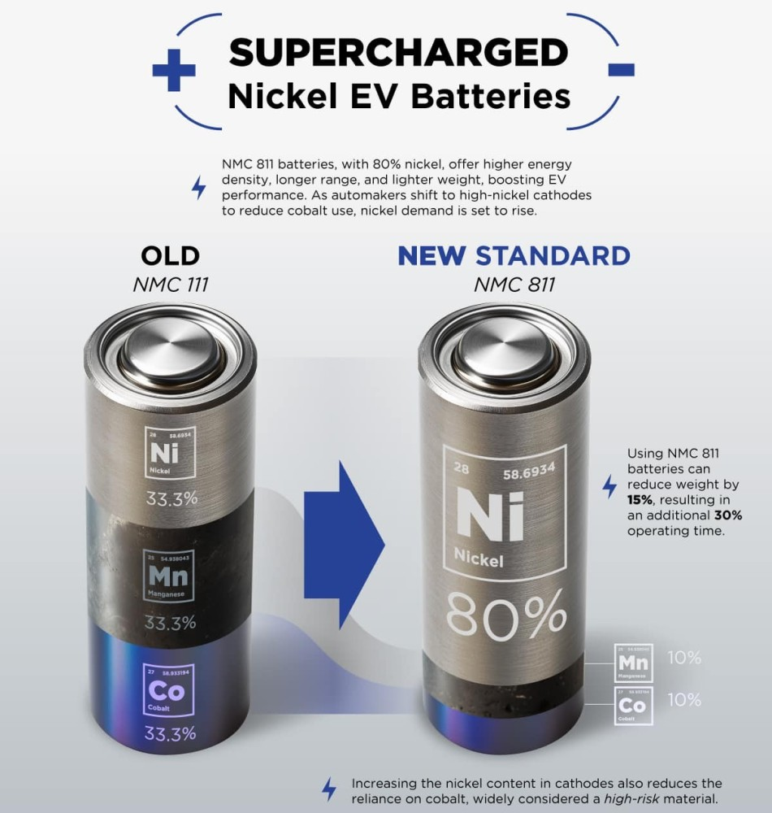
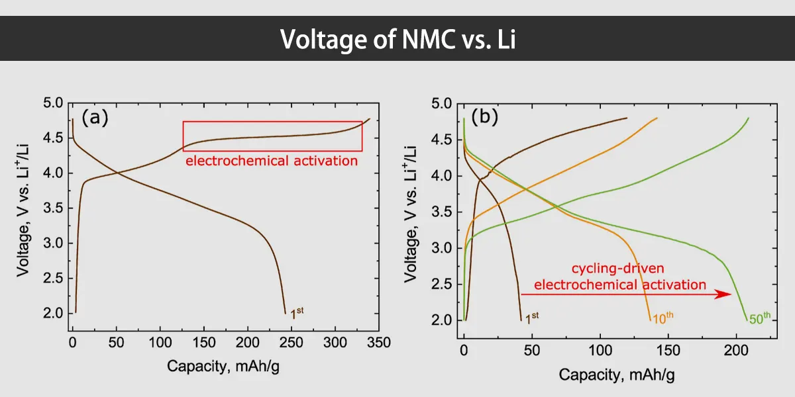
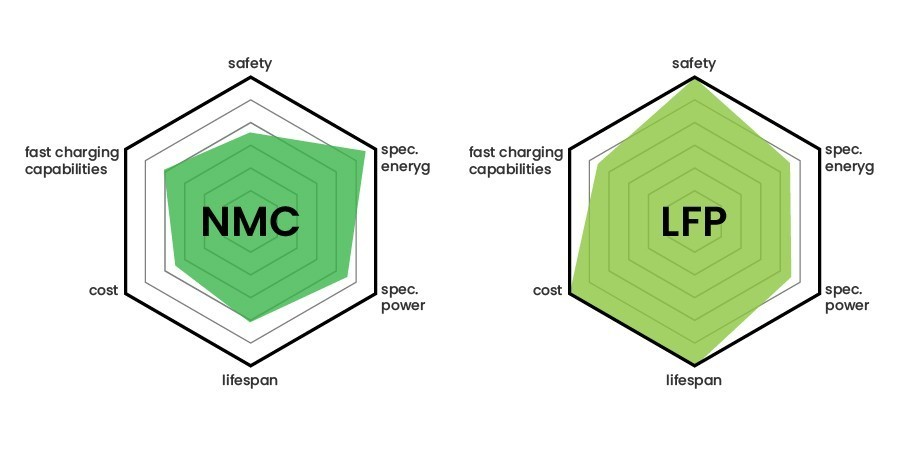
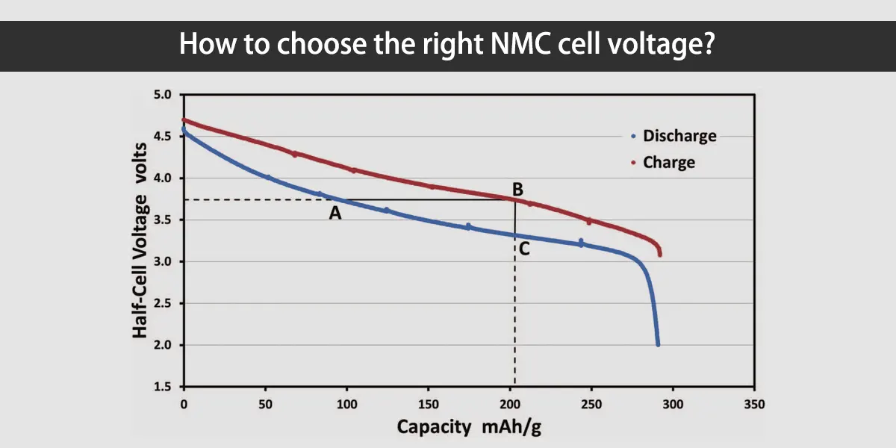

Understanding voltage is essential to comprehend the characteristics and performance of nickel-manganese-cobalt (NMC) batteries. This article will go through the definition of voltage, how it relates to NMC batteries, and other associated terminology. Furthermore, we'll examine the voltage range of NMC batteries, the variables influencing their voltage, and the significance of voltage in battery selection.
1. What is the voltage? What is an NMC battery?
The potential difference between two points in a circuit is measured as voltage. It stands for the force causing the current. An NMC battery is a type of rechargeable lithium battery cell that is frequently found in energy storage systems and electric vehicles. It is made of nickel, manganese, and cobalt.

2. What is the voltage range of the Li-NMC battery? How to measure the voltage of NMC battery?
Li-NMC batteries usually operate in the voltage range of 3.0V to 4.2V of each cell. To measure the voltage of an NMC battery, you can use a multimeter or battery management system (BMS). These tools provide accurate readings of battery voltage for monitoring and maintenance.
3. What is the voltage of NMC vs Li? Compare different types of battery voltages
We can gain a thorough grasp of the characteristics of various battery chemistries by comparing their nominal voltages. As an illustration, NMC batteries typically have a nominal voltage range of 3.6V to 3.7V, whereas the nominal voltage ranges of other chemical systems, such as LiFePO4 (3.2V), lead acid (2V), and nickel hydrogen (1.2V), vary.

4. Factors affecting NMC battery voltage
The NMC battery voltage is greatly influenced by a number of factors, which in turn affects the battery performance.
- Charging status (SOC): The SOC that represents the remaining capacity level directly affects the voltage output. The higher the battery is charged, the higher the battery voltage will be.
- Temperature: Temperature plays a vital role. High temperature can increase voltage, but it may also accelerate aging.
- Discharge rate: The increase in the discharge rate will affect the voltage, and a higher discharge rate will lead to a decrease in voltage.
NMC battery performance can be maximized, battery life can be increased, and dependable operation can be guaranteed by keeping an eye on these variables and putting suitable controls in place, such as temperature control and suitable charging/discharge technology.

5. The importance of battery voltage
The battery's voltage is a representation of both its potential difference and its power output. Battery voltage is a critical parameter that determines the performance and suitability of NMC batteries in certain applications.
6. The higher the battery voltage, the better?
Higher battery voltage doesn't always translate into the best performance, despite its apparent advantages. Specific voltage requirements apply to different applications, and going over these limits could result in potential damage and safety issues.
The battery cell is also in an abnormal state if the high voltage is greater than the cut-off voltage. Consequently, it is crucial to balance the necessary performance, energy density, and safety considerations when selecting the proper NMC battery voltage.
7. NMC battery 3.6V vs 3.65V vs 3.7V - which difference is better?
NMC battery voltage variations, such as those of 3.6V, 3.65V, or 3.7V, are brought on by trade-offs between performance and design. The decision is based on the particular needs of the application. One potential benefit of lower voltages, like 3.6V, is that BMS management might be simpler.
Higher voltages, such as 3.7V, on the other hand, might result in greater power output and energy density. To choose the best NMC battery voltage, it is crucial to assess the particular requirements of the application and take into account elements like energy needs, power requirements, and cost-effectiveness.
8. How to choose the right NMC battery voltage
The proper NMC battery voltage is determined by a number of variables. Take into account the particular needs of the application, such as power output, energy density, cost-effectiveness, and safety factors. Determine the voltage range that is appropriate for the application and strike a balance between it and the anticipated life and performance. In order to properly select the NMC battery voltage appropriate for a particular application, you can also, for instance, ask the 18650 battery store for guidance and, if necessary, seek professional advice.

Conclusion
To sum up, in order to maximize battery performance and life in a variety of applications, one must understand NMC battery voltage. People can choose batteries wisely if they understand the concept of voltage, research pertinent terms, and take into account the variables affecting NMC battery voltage.